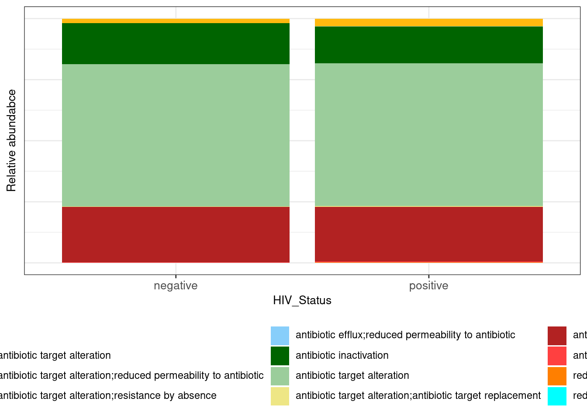

Last updated: 2022-03-27
Checks: 6 1
Knit directory: 2022_Rubio_MetaHIV/
This reproducible R Markdown analysis was created with workflowr (version 1.7.0). The Checks tab describes the reproducibility checks that were applied when the results were created. The Past versions tab lists the development history.
The R Markdown is untracked by Git. To know which version of the R Markdown file created these results, you’ll want to first commit it to the Git repo. If you’re still working on the analysis, you can ignore this warning. When you’re finished, you can run wflow_publish to commit the R Markdown file and build the HTML.
Great job! The global environment was empty. Objects defined in the global environment can affect the analysis in your R Markdown file in unknown ways. For reproduciblity it’s best to always run the code in an empty environment.
The command set.seed(20220202) was run prior to running the code in the R Markdown file. Setting a seed ensures that any results that rely on randomness, e.g. subsampling or permutations, are reproducible.
Great job! Recording the operating system, R version, and package versions is critical for reproducibility.
Nice! There were no cached chunks for this analysis, so you can be confident that you successfully produced the results during this run.
Great job! Using relative paths to the files within your workflowr project makes it easier to run your code on other machines.
Great! You are using Git for version control. Tracking code development and connecting the code version to the results is critical for reproducibility.
The results in this page were generated with repository version e88cb56. See the Past versions tab to see a history of the changes made to the R Markdown and HTML files.
Note that you need to be careful to ensure that all relevant files for the analysis have been committed to Git prior to generating the results (you can use wflow_publish or wflow_git_commit). workflowr only checks the R Markdown file, but you know if there are other scripts or data files that it depends on. Below is the status of the Git repository when the results were generated:
Ignored files:
Ignored: .Rhistory
Ignored: .Rproj.user/
Ignored: output/aribaData/
Ignored: output/grootData/
Untracked files:
Untracked: analysis/barplot.Rmd
Untracked: analysis/rarefaction.Rmd
Unstaged changes:
Modified: analysis/_site.yml
Modified: analysis/index.Rmd
Note that any generated files, e.g. HTML, png, CSS, etc., are not included in this status report because it is ok for generated content to have uncommitted changes.
There are no past versions. Publish this analysis with wflow_publish() to start tracking its development.
library(tidyverse)
library(glue)
library(ggtext)load("output/summarized_ariba.RDA")
load("output/summarized_groot.RDA")
metadata<-read_csv("data/Metadata/metadata.csv")
metadata_ariba<-metadata%>%filter(SampleID %in% colnames(ariba_counts[-1]))colors<-c("darkgoldenrod1", "darkseagreen", "darkorchid", "darkolivegreen1",
"lightskyblue", "darkgreen", "darkseagreen3", "khaki2", "firebrick", "brown1",
"darkorange1", "cyan1", "royalblue4", "darksalmon", "chartreuse1","darkorchid4",
"gold","forestgreen", "deeppink","green", "red","darkgrey","blue","aquamarine", "burlywood1",
"darkslateblue", "chartreuse3","firebrick3", "aquamarine4","azure1","chocolate1","deeppink4","aquamarine2", "burlywood1",
"darkblue", "darkgoldenrod1", "darkseagreen", "darkorchid", "darkolivegreen1",
"lightskyblue", "darkgreen", "darkseagreen3", "khaki2", "firebrick", "brown1", "darkslateblue", "darkgoldenrod1", "darkseagreen", "darkorchid", "darkolivegreen1",
"lightskyblue", "darkgreen", "darkseagreen3", "khaki2", "firebrick", "brown1",
"darkorange1", "cyan1", "royalblue4", "darksalmon", "chartreuse1","darkorchid4",
"gold","forestgreen", "deeppink","green", "red","darkgrey","blue","aquamarine", "burlywood1",
"darkslateblue", "chartreuse3","firebrick3", "aquamarine4","azure1","chocolate1","deeppink4","aquamarine2", "burlywood1",
"darkblue", "darkgoldenrod1", "darkseagreen", "darkorchid", "darkolivegreen1",
"lightskyblue", "darkgreen", "darkseagreen3", "khaki2", "firebrick", "brown1", "darkslateblue")x<-ariba_counts%>%
pivot_longer(-ref_name, names_to = "sample", values_to = "counts")%>%
left_join(., refname_all_ariba, by="ref_name")%>%
group_by(sample, `Resistance Mechanism`)%>%
summarize(glomcount=sum(counts), .groups = "drop")%>%
inner_join(., metadata, by=c("sample"="SampleID"))%>%
group_by(HIV_Status)%>%
mutate(rel_abund=glomcount*100/sum(glomcount))%>%
ungroup()%>%
select(sample, `Resistance Mechanism`, glomcount, rel_abund, everything())
ggplot(data=x, aes(x=HIV_Status, y=glomcount, fill=`Resistance Mechanism`))+
geom_bar(aes(), stat="identity", position="stack") +
scale_fill_manual("Resistance Mechanism", values =colors ) +
labs(y="Relative abundabce")+
theme_bw()+
theme(legend.position="bottom",
legend.text = element_markdown(),
axis.text.y.left = element_blank(),
axis.text.x = element_text(size = 10),
axis.title.y = element_text(size = 10),
axis.ticks.y=element_blank(),
strip.text.x = element_text(face = "bold"),
title = element_text(size = 10) ) + guides(fill=guide_legend(nrow=4))
refname_all_ariba$`AMR Gene Family` [1] "APH(3')"
[2] "CblA beta-lactamase"
[3] "CfxA beta-lactamase"
[4] "CfxA beta-lactamase"
[5] "23S rRNA with mutation conferring resistance to macrolide antibiotics"
[6] "Erm 23S ribosomal RNA methyltransferase"
[7] "Erm 23S ribosomal RNA methyltransferase"
[8] "Erm 23S ribosomal RNA methyltransferase"
[9] "major facilitator superfamily (MFS) antibiotic efflux pump"
[10] "23S rRNA with mutation conferring resistance to macrolide antibiotics"
[11] "16s rRNA with mutation conferring resistance to aminoglycoside antibiotics"
[12] "23S rRNA with mutation conferring resistance to macrolide antibiotics"
[13] "23S rRNA with mutation conferring resistance to macrolide antibiotics"
[14] "16s rRNA with mutation conferring resistance to aminoglycoside antibiotics"
[15] "16s rRNA with mutation conferring resistance to aminoglycoside antibiotics"
[16] "streptothricin acetyltransferase (SAT)"
[17] "23S rRNA with mutation conferring resistance to linezolid antibiotics"
[18] "23S rRNA with mutation conferring resistance to macrolide antibiotics;23S rRNA with mutation conferring resistance to streptogramins antibiotics"
[19] "23S rRNA with mutation conferring resistance to pleuromutilin antibiotics"
[20] "trimethoprim resistant dihydrofolate reductase dfr"
[21] "antibiotic-resistant isoleucyl-tRNA synthetase (ileS)"
[22] "lincosamide nucleotidyltransferase (LNU)"
[23] "ABC-F ATP-binding cassette ribosomal protection protein"
[24] "rifamycin-resistant beta-subunit of RNA polymerase (rpoB)"
[25] "16s rRNA with mutation conferring resistance to aminoglycoside antibiotics"
[26] "16s rRNA with mutation conferring resistance to aminoglycoside antibiotics"
[27] "tetracycline-resistant ribosomal protection protein"
[28] "tetracycline-resistant ribosomal protection protein"
[29] "tetracycline-resistant ribosomal protection protein"
[30] "tetracycline-resistant ribosomal protection protein"
[31] "tetracycline inactivation enzyme"
[32] "major facilitator superfamily (MFS) antibiotic efflux pump"
[33] "ANT(6)"
[34] "23S rRNA with mutation conferring resistance to macrolide antibiotics"
[35] "23S rRNA with mutation conferring resistance to macrolide antibiotics"
[36] "23S rRNA with mutation conferring resistance to oxazolidinone antibiotics"
[37] "tetracycline inactivation enzyme"
[38] "tetracycline-resistant ribosomal protection protein"
[39] "Erm 23S ribosomal RNA methyltransferase"
[40] "chloramphenicol acetyltransferase (CAT)"
[41] "23S rRNA with mutation conferring resistance to macrolide antibiotics"
[42] "ANT(3'')"
[43] "ANT(6)"
[44] "sulfonamide resistant sul"
[45] "tetracycline-resistant ribosomal protection protein"
[46] "glycopeptide resistance gene cluster;vanW"
[47] "ACI beta-lactamase"
[48] "CfxA beta-lactamase"
[49] "Erm 23S ribosomal RNA methyltransferase"
[50] "16S rRNA with mutation conferring resistance to tetracycline derivatives"
[51] "OXA beta-lactamase"
[52] "16S rRNA with mutation conferring resistance to tetracycline derivatives"
[53] "ANT(6)"
[54] "23S rRNA with mutation conferring resistance to macrolide antibiotics"
[55] "16s rRNA with mutation conferring resistance to aminoglycoside antibiotics"
[56] "23S rRNA with mutation conferring resistance to macrolide antibiotics"
[57] "tetracycline inactivation enzyme"
[58] "fluoroquinolone resistant gyrA"
[59] "fluoroquinolone resistant parC"
[60] "ATP-binding cassette (ABC) antibiotic efflux pump"
[61] "ATP-binding cassette (ABC) antibiotic efflux pump"
[62] "tetracycline-resistant ribosomal protection protein"
[63] "APH(3'')"
[64] "APH(6)"
[65] "resistance-nodulation-cell division (RND) antibiotic efflux pump"
[66] "resistance-nodulation-cell division (RND) antibiotic efflux pump"
[67] "resistance-nodulation-cell division (RND) antibiotic efflux pump"
[68] "resistance-nodulation-cell division (RND) antibiotic efflux pump"
[69] "CTX-M beta-lactamase"
[70] "cepA beta-lactamase"
[71] "EC beta-lactamase"
[72] "elfamycin resistant EF-Tu"
[73] "antibiotic-resistant UhpT"
[74] "23S rRNA with mutation conferring resistance to macrolide antibiotics"
[75] "OXA beta-lactamase"
[76] "23S rRNA with mutation conferring resistance to macrolide antibiotics"
[77] "ATP-binding cassette (ABC) antibiotic efflux pump;major facilitator superfamily (MFS) antibiotic efflux pump;resistance-nodulation-cell division (RND) antibiotic efflux pump"
[78] "resistance-nodulation-cell division (RND) antibiotic efflux pump"
[79] "resistance-nodulation-cell division (RND) antibiotic efflux pump"
[80] "resistance-nodulation-cell division (RND) antibiotic efflux pump"
[81] "resistance-nodulation-cell division (RND) antibiotic efflux pump"
[82] "ampC-type beta-lactamase"
[83] "resistance-nodulation-cell division (RND) antibiotic efflux pump"
[84] "trimethoprim resistant dihydrofolate reductase dfr"
[85] "major facilitator superfamily (MFS) antibiotic efflux pump"
[86] "major facilitator superfamily (MFS) antibiotic efflux pump"
[87] "pmr phosphoethanolamine transferase"
[88] "major facilitator superfamily (MFS) antibiotic efflux pump;resistance-nodulation-cell division (RND) antibiotic efflux pump"
[89] "major facilitator superfamily (MFS) antibiotic efflux pump;resistance-nodulation-cell division (RND) antibiotic efflux pump"
[90] "resistance-nodulation-cell division (RND) antibiotic efflux pump"
[91] "resistance-nodulation-cell division (RND) antibiotic efflux pump"
[92] "triclosan resistant gyrA"
[93] "aminocoumarin resistant gyrB"
[94] "resistance-nodulation-cell division (RND) antibiotic efflux pump"
[95] "resistance-nodulation-cell division (RND) antibiotic efflux pump"
[96] "resistance-nodulation-cell division (RND) antibiotic efflux pump"
[97] "major facilitator superfamily (MFS) antibiotic efflux pump"
[98] "major facilitator superfamily (MFS) antibiotic efflux pump"
[99] "ATP-binding cassette (ABC) antibiotic efflux pump"
[100] "ATP-binding cassette (ABC) antibiotic efflux pump"
[101] "ATP-binding cassette (ABC) antibiotic efflux pump"
[102] "antibiotic-resistant murA transferase"
[103] "antibiotic resistant nfsA"
[104] "fluoroquinolone resistant parC"
[105] "fluoroquinolone resistant parE"
[106] "General Bacterial Porin with reduced permeability to beta-lactams"
[107] "rifamycin-resistant beta-subunit of RNA polymerase (rpoB)"
[108] "vancomycin-resistant beta prime subunit of RNA polymerase (rpoC)"
[109] "16S rRNA with mutation conferring resistance to tetracycline derivatives"
[110] "ATP-binding cassette (ABC) antibiotic efflux pump;major facilitator superfamily (MFS) antibiotic efflux pump;resistance-nodulation-cell division (RND) antibiotic efflux pump"
[111] "pmr phosphoethanolamine transferase"
[112] "AAC(6')"
[113] "ACC beta-lactamase"
[114] "APH(2'')"
[115] "pmr phosphoethanolamine transferase"
[116] "Erm 23S ribosomal RNA methyltransferase"
[117] "antibiotic-resistant ptsI phosphotransferase"
[118] "fosfomycin thiol transferase"
[119] "General Bacterial Porin with reduced permeability to beta-lactams"
[120] "ATP-binding cassette (ABC) antibiotic efflux pump;pmr phosphoethanolamine transferase"
[121] "major facilitator superfamily (MFS) antibiotic efflux pump"
[122] "major facilitator superfamily (MFS) antibiotic efflux pump"
[123] "major facilitator superfamily (MFS) antibiotic efflux pump"
[124] "General Bacterial Porin with reduced permeability to beta-lactams"
[125] "General Bacterial Porin with reduced permeability to beta-lactams"
[126] "General Bacterial Porin with reduced permeability to beta-lactams"
[127] "LEN beta-lactamase"
[128] "ATP-binding cassette (ABC) antibiotic efflux pump"
[129] "MCR phosphoethanolamine transferase"
[130] "General Bacterial Porin with reduced permeability to beta-lactams"
[131] "SHV beta-lactamase"
[132] "resistance-nodulation-cell division (RND) antibiotic efflux pump"
[133] "resistance-nodulation-cell division (RND) antibiotic efflux pump"
[134] "resistance-nodulation-cell division (RND) antibiotic efflux pump"
[135] "pmr phosphoethanolamine transferase"
[136] "antibiotic resistant fabG"
[137] "fluoroquinolone resistant gyrA"
[138] "fluoroquinolone resistant gyrB"
[139] "resistance-nodulation-cell division (RND) antibiotic efflux pump"
[140] "resistance-nodulation-cell division (RND) antibiotic efflux pump"
[141] "resistance-nodulation-cell division (RND) antibiotic efflux pump"
[142] "16s rRNA with mutation conferring resistance to aminoglycoside antibiotics"
[143] "elfamycin resistant EF-Tu"
[144] "TEM beta-lactamase"
[145] "ATP-binding cassette (ABC) antibiotic efflux pump"
[146] "major facilitator superfamily (MFS) antibiotic efflux pump"
[147] "CfxA beta-lactamase"
[148] "23S rRNA with mutation conferring resistance to macrolide antibiotics"
[149] "TEM beta-lactamase"
[150] "chloramphenicol acetyltransferase (CAT)"
[151] "16s rRNA with mutation conferring resistance to aminoglycoside antibiotics"
[152] "cepA beta-lactamase"
[153] "antibiotic-resistant GlpT"
[154] "major facilitator superfamily (MFS) antibiotic efflux pump"
[155] "16s rRNA with mutation conferring resistance to peptide antibiotics"
[156] "ATP-binding cassette (ABC) antibiotic efflux pump;General Bacterial Porin with reduced permeability to beta-lactams;major facilitator superfamily (MFS) antibiotic efflux pump;resistance-nodulation-cell division (RND) antibiotic efflux pump"
[157] "major facilitator superfamily (MFS) antibiotic efflux pump"
[158] "16s rRNA with mutation conferring resistance to aminoglycoside antibiotics"
[159] "23S rRNA with mutation conferring resistance to macrolide antibiotics"
[160] "major facilitator superfamily (MFS) antibiotic efflux pump"
[161] "AAC(6')"
[162] "elfamycin resistant EF-Tu"
[163] "16s rRNA with mutation conferring resistance to aminoglycoside antibiotics"
[164] "glycopeptide resistance gene cluster;van ligase"
[165] "glycopeptide resistance gene cluster;vanT"
[166] "glycopeptide resistance gene cluster;vanXY"
[167] "macrolide phosphotransferase (MPH)"
[168] "daptomycin resistant cls"
[169] "major facilitator superfamily (MFS) antibiotic efflux pump"
[170] "ABC-F ATP-binding cassette ribosomal protection protein"
[171] "23S rRNA with mutation conferring resistance to macrolide antibiotics"
[172] "16s rRNA with mutation conferring resistance to aminoglycoside antibiotics"
[173] "undecaprenyl pyrophosphate related proteins"
[174] "MipA-interacting Protein"
[175] "major facilitator superfamily (MFS) antibiotic efflux pump"
[176] "sulfonamide resistant sul"
[177] "major facilitator superfamily (MFS) antibiotic efflux pump"
[178] "tetracycline-resistant ribosomal protection protein"
[179] "cepA beta-lactamase"
[180] "Sugar Porin (SP)"
[181] "antibiotic-resistant cya adenylate cyclase"
[182] "Erm 23S ribosomal RNA methyltransferase"
[183] "major facilitator superfamily (MFS) antibiotic efflux pump;resistance-nodulation-cell division (RND) antibiotic efflux pump"
[184] "pmr phosphoethanolamine transferase"
[185] "resistance-nodulation-cell division (RND) antibiotic efflux pump"
[186] "resistance-nodulation-cell division (RND) antibiotic efflux pump"
[187] "major facilitator superfamily (MFS) antibiotic efflux pump"
[188] "major facilitator superfamily (MFS) antibiotic efflux pump"
[189] "major facilitator superfamily (MFS) antibiotic efflux pump"
[190] "antibiotic resistant fabI"
[191] "sulfonamide resistant dihydropteroate synthase folP"
[192] "kdpDE"
[193] "resistance-nodulation-cell division (RND) antibiotic efflux pump"
[194] "resistance-nodulation-cell division (RND) antibiotic efflux pump"
[195] "resistance-nodulation-cell division (RND) antibiotic efflux pump"
[196] "major facilitator superfamily (MFS) antibiotic efflux pump"
[197] "major facilitator superfamily (MFS) antibiotic efflux pump"
[198] "major facilitator superfamily (MFS) antibiotic efflux pump"
[199] "major facilitator superfamily (MFS) antibiotic efflux pump"
[200] "ATP-binding cassette (ABC) antibiotic efflux pump;pmr phosphoethanolamine transferase"
[201] "General Bacterial Porin with reduced permeability to beta-lactams"
[202] "fluoroquinolone resistant parC"
[203] "23S rRNA with mutation conferring resistance to pleuromutilin antibiotics"
[204] "ANT(3'')"
[205] "ANT(3'')"
[206] "chloramphenicol acetyltransferase (CAT)"
[207] "ATP-binding cassette (ABC) antibiotic efflux pump"
[208] "major facilitator superfamily (MFS) antibiotic efflux pump"
[209] "daptomycin resistant YybT"
[210] "daptomycin resistant cls"
[211] "ATP-binding cassette (ABC) antibiotic efflux pump"
[212] "multidrug and toxic compound extrusion (MATE) transporter"
[213] "daptomycin resistant gshF"
[214] "daptomycin resistant liaF"
[215] "daptomycin resistant liaR"
[216] "daptomycin resistant liaS"
[217] "ABC-F ATP-binding cassette ribosomal protection protein"
[218] "AAC(6')"
[219] "ANT(3'')"
[220] "23s rRNA with mutation conferring resistance to aminoglycoside antibiotics"
[221] "Penicillin-binding protein mutations conferring resistance to beta-lactam antibiotics"
[222] "ANT(3'')"
[223] "23S rRNA with mutation conferring resistance to macrolide antibiotics"
[224] "ACT beta-lactamase"
[225] "APH(2'')"
[226] "lincosamide nucleotidyltransferase (LNU)"
[227] "EC beta-lactamase"
[228] "elfamycin resistant EF-Tu"
[229] "antibiotic-resistant UhpT"
[230] "ampC-type beta-lactamase"
[231] "General Bacterial Porin with reduced permeability to beta-lactams;resistance-nodulation-cell division (RND) antibiotic efflux pump"
[232] "23S rRNA with mutation conferring resistance to macrolide antibiotics"
[233] "tetracycline-resistant ribosomal protection protein"
[234] "CfxA beta-lactamase"
[235] "23S rRNA with mutation conferring resistance to macrolide antibiotics"
[236] "ABC-F ATP-binding cassette ribosomal protection protein"
[237] "rifamycin-resistant beta-subunit of RNA polymerase (rpoB)"
[238] "AAC(3)"
[239] "APH(3')"
[240] "23S rRNA with mutation conferring resistance to macrolide antibiotics"
[241] "trimethoprim resistant dihydrofolate reductase dfr"
[242] "APH(2'')"
[243] "cepA beta-lactamase"
[244] "23S rRNA with mutation conferring resistance to macrolide antibiotics"
[245] "ACC beta-lactamase"
[246] "OXA beta-lactamase"
[247] "ABC-F ATP-binding cassette ribosomal protection protein"
[248] "tetracycline-resistant ribosomal protection protein"
[249] "glycopeptide resistance gene cluster;vanS"
[250] "16s rRNA with mutation conferring resistance to aminoglycoside antibiotics"
[251] "TEM beta-lactamase"
[252] "OXA beta-lactamase"
[253] "TEM beta-lactamase"
[254] "AAC(6');APH(2'')"
[255] "trimethoprim resistant dihydrofolate reductase dfr"
[256] "AAC(6')"
[257] "EC beta-lactamase"
[258] "TEM beta-lactamase"
[259] "small multidrug resistance (SMR) antibiotic efflux pump"
[260] "daptomycin resistant liaF"
[261] "daptomycin resistant liaR"
[262] "major facilitator superfamily (MFS) antibiotic efflux pump"
[263] "ANT(9)"
[264] "23S rRNA with mutation conferring resistance to macrolide antibiotics"
[265] "TEM beta-lactamase"
[266] "CfiA beta-lactamase"
[267] "ATP-binding cassette (ABC) antibiotic efflux pump"
[268] "macrolide esterase"
[269] "OXA beta-lactamase"
[270] "CfiA beta-lactamase"
[271] "ampC-type beta-lactamase"
[272] "OXA beta-lactamase"
[273] "ACT beta-lactamase"
[274] "ABC-F ATP-binding cassette ribosomal protection protein"
[275] "daptomycin resistant liaS"
[276] "EC beta-lactamase"
[277] "amp acetyltransferase"
[278] "major facilitator superfamily (MFS) antibiotic efflux pump"
[279] "sulfonamide resistant sul"
[280] "Cfr 23S ribosomal RNA methyltransferase"
[281] "APH(2'')"
[282] "ACT beta-lactamase"
[283] "ACT beta-lactamase"
[284] "triclosan resistant gyrA"
[285] "TEM beta-lactamase"
[286] "major facilitator superfamily (MFS) antibiotic efflux pump"
[287] "AAC(3)"
[288] "APH(4)"
[289] "TEM beta-lactamase"
[290] "ANT(3'')"
[291] "ACT beta-lactamase"
[292] "ACT beta-lactamase"
[293] "CMY beta-lactamase"
[294] "trimethoprim resistant dihydrofolate reductase dfr"
[295] "trimethoprim resistant dihydrofolate reductase dfr"
[296] "major facilitator superfamily (MFS) antibiotic efflux pump"
[297] "SHV beta-lactamase"
[298] "EC beta-lactamase"
[299] "TEM beta-lactamase"
[300] "ANT(3'')"
[301] "trimethoprim resistant dihydrofolate reductase dfr"
[302] "trimethoprim resistant dihydrofolate reductase dfr"
[303] "CMY beta-lactamase"
[304] "chloramphenicol acetyltransferase (CAT)"
[305] "CfiA beta-lactamase"
[306] "tetracycline inactivation enzyme"
[307] "CfiA beta-lactamase"
[308] "CfiA beta-lactamase" metadata$HIV_Status [1] "positive" "positive" "positive" "negative" "negative" "negative"
[7] "positive" "positive" "positive" "negative" "positive" "positive"
[13] "positive" "positive" "positive" "negative" "positive" "positive"
[19] "negative" "positive" "positive" "positive" "positive" "positive"
[25] "negative" "positive" "positive" "positive" "negative" "positive"
[31] "negative" "negative" "positive" "positive" "positive" "positive"
[37] "positive" "positive" "positive" "positive" "positive" "positive"
[43] "positive" "positive" "positive" "positive" "positive" "positive"
[49] "positive" "positive" "positive" "positive" "positive" "positive"
[55] "positive" "positive" "positive" "positive" "positive" "positive"
[61] "positive" "positive" "positive" "positive" "positive" "positive"
[67] "positive" "positive" "positive" "positive" "positive" "negative"
[73] "negative" "negative" "negative" "negative" "negative" "positive"
[79] "positive" "positive" "positive" "positive" "positive" "positive"
[85] "negative" "positive" "positive" "positive" "positive" "positive"
[91] "positive" "positive" "positive" "positive" "positive" "positive"
[97] "positive" "negative" "negative" "positive" "positive" "positive"
[103] "positive" "positive" "positive" "positive" "positive" "positive"
[109] "positive" "positive" "positive" "negative" "positive" "positive"
[115] "positive" "positive" "positive" "positive" "positive" "positive"
[121] "positive" "positive" "positive" "negative" "positive" "positive"
[127] "positive" "positive" "positive" "positive" "positive" "negative"
[133] "positive" "negative" "positive" "negative" "positive" "positive"
[139] "positive" "positive" "positive" "positive" "negative" "positive"
[145] "positive" "positive" "positive" "negative" "positive" "negative"
[151] "positive" "positive" "positive" "positive" "positive" "positive"barplot_perc<-function(table_path, tree_path, taxonomy_path, metadata, taxa_level, glom_var, percentage, nrow_legend=5){
colors<-c("darkgoldenrod1", "darkseagreen", "darkorchid", "darkolivegreen1",
"lightskyblue", "darkgreen", "darkseagreen3", "khaki2", "firebrick", "brown1",
"darkorange1", "cyan1", "royalblue4", "darksalmon", "chartreuse1","darkorchid4",
"gold","forestgreen", "deeppink","green", "red","darkgrey","blue","aquamarine", "burlywood1",
"darkslateblue", "chartreuse3","firebrick3", "aquamarine4","azure1","chocolate1","deeppink4","aquamarine2", "burlywood1",
"darkblue", "darkgoldenrod1", "darkseagreen", "darkorchid", "darkolivegreen1",
"lightskyblue", "darkgreen", "darkseagreen3", "khaki2", "firebrick", "brown1", "darkslateblue", "darkgoldenrod1", "darkseagreen", "darkorchid", "darkolivegreen1",
"lightskyblue", "darkgreen", "darkseagreen3", "khaki2", "firebrick", "brown1",
"darkorange1", "cyan1", "royalblue4", "darksalmon", "chartreuse1","darkorchid4",
"gold","forestgreen", "deeppink","green", "red","darkgrey","blue","aquamarine", "burlywood1",
"darkslateblue", "chartreuse3","firebrick3", "aquamarine4","azure1","chocolate1","deeppink4","aquamarine2", "burlywood1",
"darkblue", "darkgoldenrod1", "darkseagreen", "darkorchid", "darkolivegreen1",
"lightskyblue", "darkgreen", "darkseagreen3", "khaki2", "firebrick", "brown1", "darkslateblue")
taxa_level<-enquo(taxa_level)
glom_var<-enquo(glom_var)
data<-qza_to_phyloseq(
features=table_path,
tree=tree_path,
taxonomy=taxonomy_path)%>% ##Obtengo el objeto phyloseq a partir de qiime
psmelt()%>% ##Transformo el objeto a un dataframe
mutate(Family=ifelse(is.na(Family), paste("Unclassified", Order), Family), ##Familias no identificads como Orden unlassified
Family=ifelse(Family=="uncultured", paste ("Uncultured", Order), Family),## Faimilas unculterd como orden uncultured
Genus=ifelse(is.na(Genus), paste("Unclassified", Family), Genus))%>% ##G?nero no identificado como Familia unlassified
group_by(Sample, !!taxa_level)%>% ##Agrupamos a nivel de familia
summarize(count=sum(Abundance), .groups = "drop")%>% ##Abundancia relativa de cada familia (cambiar si necesario)
inner_join(metadata, by="Sample")%>% ## Unifico con metadatos
group_by(!!glom_var)%>%
mutate(rel_abund=count*100/sum(count))%>%
ungroup()%>%
mutate(tax_level=!!taxa_level,
tax_level=str_replace(tax_level, "(.*)", "*\\1*"),
tax_level=str_replace(tax_level, "\\*Uncultured (.*)", "Uncultured *\\1" ),
tax_level=str_replace(tax_level, "\\*Unclassified (.*)", "Unclassified *\\1" ),
tax_level=if_else(rel_abund<percentage, glue("Families < {percentage}% abundance"), tax_level),
tax_level=factor(tax_level),
tax_level=fct_relevel(tax_level, glue("Families < {percentage}% abundance"), after=Inf))%>%
select(Sample, tax_level, everything())
ggplot(data=data, aes(x=!!glom_var, y=rel_abund, fill=tax_level))+
geom_bar(aes(), stat="identity", position="stack") +
scale_fill_manual(quo_name(taxa_level), values =colors ) +
labs(y="Relative abundabce")+
theme_bw()+
theme(legend.position="bottom",
legend.text = element_markdown(),
axis.text.y.left = element_blank(),
axis.text.x = element_text(size = 10),
axis.title.y = element_text(size = 10),
axis.ticks.y=element_blank(),
strip.text.x = element_text(face = "bold"),
title = element_text(size = 10) ) + guides(fill=guide_legend(nrow=nrow_legend))}
sessionInfo()R version 4.1.2 (2021-11-01)
Platform: x86_64-pc-linux-gnu (64-bit)
Running under: Ubuntu 20.04.3 LTS
Matrix products: default
BLAS: /usr/lib/x86_64-linux-gnu/blas/libblas.so.3.9.0
LAPACK: /usr/lib/x86_64-linux-gnu/lapack/liblapack.so.3.9.0
locale:
[1] LC_CTYPE=es_ES.UTF-8 LC_NUMERIC=C
[3] LC_TIME=es_ES.UTF-8 LC_COLLATE=es_ES.UTF-8
[5] LC_MONETARY=es_ES.UTF-8 LC_MESSAGES=es_ES.UTF-8
[7] LC_PAPER=es_ES.UTF-8 LC_NAME=C
[9] LC_ADDRESS=C LC_TELEPHONE=C
[11] LC_MEASUREMENT=es_ES.UTF-8 LC_IDENTIFICATION=C
attached base packages:
[1] stats graphics grDevices utils datasets methods base
other attached packages:
[1] ggtext_0.1.1 glue_1.6.2 forcats_0.5.1 stringr_1.4.0
[5] dplyr_1.0.8 purrr_0.3.4 readr_2.1.2 tidyr_1.2.0
[9] tibble_3.1.6 ggplot2_3.3.5 tidyverse_1.3.1 workflowr_1.7.0
loaded via a namespace (and not attached):
[1] httr_1.4.2 sass_0.4.1 bit64_4.0.5 vroom_1.5.7
[5] jsonlite_1.8.0 modelr_0.1.8 bslib_0.3.1 assertthat_0.2.1
[9] getPass_0.2-2 highr_0.9 cellranger_1.1.0 yaml_2.3.5
[13] pillar_1.7.0 backports_1.4.1 digest_0.6.29 promises_1.2.0.1
[17] gridtext_0.1.4 rvest_1.0.2 colorspace_2.0-3 htmltools_0.5.2
[21] httpuv_1.6.5 pkgconfig_2.0.3 broom_0.7.12 haven_2.4.3
[25] scales_1.1.1 processx_3.5.3 whisker_0.4 later_1.3.0
[29] tzdb_0.2.0 git2r_0.30.1 generics_0.1.2 farver_2.1.0
[33] ellipsis_0.3.2 withr_2.5.0 cli_3.2.0 magrittr_2.0.2
[37] crayon_1.5.0 readxl_1.3.1 evaluate_0.15 ps_1.6.0
[41] fs_1.5.2 fansi_1.0.3 xml2_1.3.3 tools_4.1.2
[45] hms_1.1.1 lifecycle_1.0.1 munsell_0.5.0 reprex_2.0.1
[49] callr_3.7.0 compiler_4.1.2 jquerylib_0.1.4 rlang_1.0.2
[53] grid_4.1.2 rstudioapi_0.13 labeling_0.4.2 rmarkdown_2.13
[57] gtable_0.3.0 DBI_1.1.2 markdown_1.1 R6_2.5.1
[61] lubridate_1.8.0 knitr_1.38 fastmap_1.1.0 bit_4.0.4
[65] utf8_1.2.2 rprojroot_2.0.2 stringi_1.7.6 parallel_4.1.2
[69] Rcpp_1.0.8.3 vctrs_0.3.8 dbplyr_2.1.1 tidyselect_1.1.2
[73] xfun_0.30